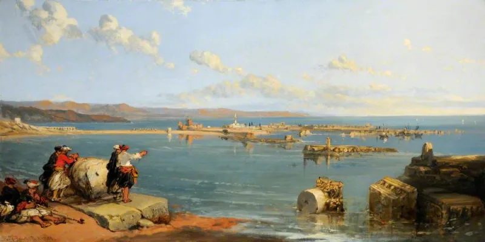
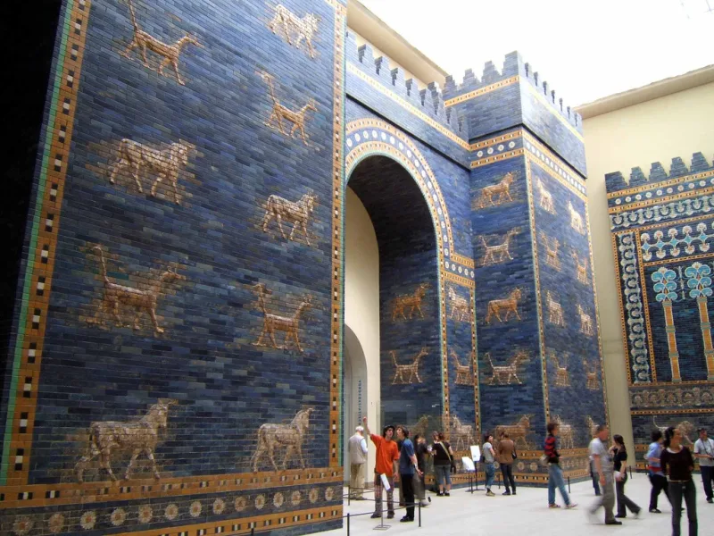

Serious philosophers argue this both ways. Say so before your friend does.
Ezekiel 26 comes from the early 6th century BC. It pronounces doom on the island city of Tyre.
Many nations against it. Walls broken.
Rubble scraped into the sea. A bare rock for spreading nets.
Nebuchadnezzar besieged Tyre for thirteen years. He took the mainland city, but not the island or its wealth.
Here is the remarkable part. Ezekiel 29:17-20 records the shortfall.
It says Nebuchadnezzar "got no wages" from Tyre, and sends him to Egypt instead. The text preserves its own unmet expectation.
Doctored texts do not do that. Two and a half centuries later Alexander built his causeway from the mainland ruins, literally scraping Tyre into the sea, and took the island.
Drop "Tyre was never rebuilt." Modern Tyre has about 200,000 people. Drop "fulfilled to the letter, overnight." Babylon did decline into the ruin Isaiah 13 and Jeremiah 51 describe, but it took centuries.
Ezekiel 26 plainly expected Nebuchadnezzar to do all of it. Reading "many nations" as stretching 250 years forward to Alexander looks like a rescue device.
Ezekiel 29 shows the first prediction failed as issued. Doom oracles against rival cities were a whole genre.
Given enough centuries, every great ancient city was sacked and most declined. Babylon's fate is base-rate history, not foresight.
Its ruin took eight hundred years, was never total, and Saddam rebuilt parts of it.
Contested, and lead with the miss. Ezekiel 29 turns an apparent weakness into your best point.
Never say "never rebuilt." Never squash the timeline. If you overclaim Tyre, the person who checks will discount everything else you said.
"The text records its own failed prediction. That's not what a doctored document looks like."


Curses on rival cities were a whole genre, and in time most cities fell.
The skeptical reading is this. Ezekiel 26 plainly expected Nebuchadnezzar to do all of it. The 'many nations' reading, which spreads the work across 250 years to Alexander, is a rescue device. Ezekiel 29 admits the miss, which proves the first word failed as given.
Doom oracles against rival cities were a genre. Given enough time, every great ancient city was sacked and most declined. Babylon's fate is base-rate history, not foresight. Its ruin took eight hundred years, was never total, and Saddam rebuilt parts of it.
A forecast vague about when, and about who, and scored kindly across a few thousand years, cannot be told apart from a prophet playing the odds. And these were cities everyone already wanted dead.
Contested — lead with the miss in Ezekiel 29, and never say 'never rebuilt'.
Contested — grade it exactly there, and lead with Ezekiel 29's own correction. That turns an apparent weakness into your strongest point. Texts made up after the fact do not record their own misses.
Never say 'never rebuilt', and never squash the timeline. If you overclaim Tyre, the skeptic who checks will discount everything else you said. This entry earns its keep as a model of restraint.